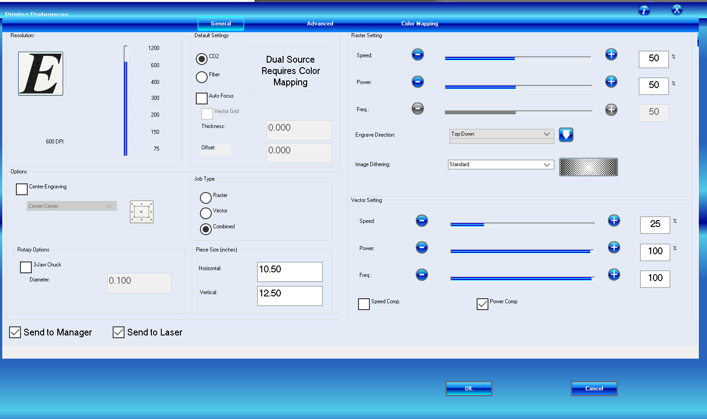

Assignment 4: Moving Parts

For this assignment, I just wanted to make something sucessfully move smoothly without getting
too complicated. When I was younger, I remember an elementary school teacher using a mood indicator to
help understand how the class was feeling. I decided to make one.

Process
I had such a hard time 3D printing, I really did not want to 3D print again so I decided to laser cut
cardboard to keep the cost of everything low. I also modified the mood indicator a bit by making including a second short hand.
I decided to add a second hand just to practive OnShape and also, I figured one hand could be used to indicate how I'm feeling
and the other one how I would want to feel. I started the shapes by using the rectangle tool and then used the line tool to make
the arrow head. Once I had the shape I wanted, I extruded the arrow to the width of the cardboard (0.1 inches). The bigger
arrow is 5 inches and the smaller one is 4 inches in length. After I got the sizing down, I worked on the hole for the rivets.
Since the arrows would be at the base of the rivet, I set the whole to .180 inches. For the flat piece the indicator would be on,
I set the hole to .20 inches since that part of the rivet is thicker. I created an assembly in OnShape using all three pieces in order to test it.
I used a laser cutter to cut the two arrows and the base.


Issues
I honestly didn't have too many issues this time around, which was a relief after last week. I owe it to Kira and Omari for teaching me
OnShape. I think the biggest
issue was the waiting time, there were a lot of people in the Mill using the laser cutters so it took me a couple
of hours for me to be able to cut my three pieces.
Final Design
Once I had everything laser cutted, I put it together and added moods with a sharpie!


Source Files, Specs and Peer Attributions
OnShape Files for the arrows here
OnShape Files for the base (with the final assembly) here
Illustrator for files for arrows here
Illustrator for files for base here
Omari and Kira walked me through how to make my shapes efficiently on OnShape!